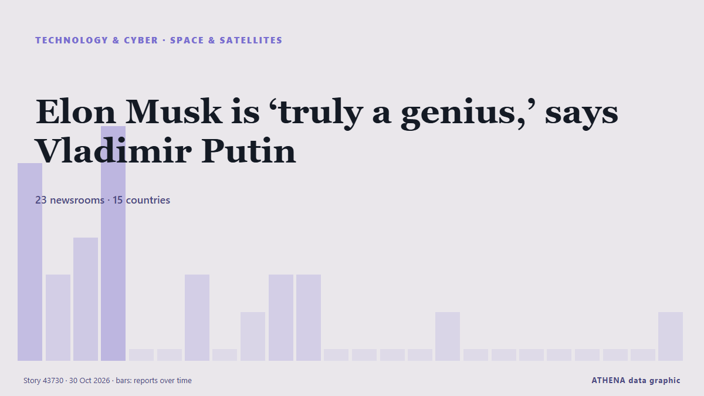

Elon Musk is ‘truly a genius,’ says Vladimir Putin

Putin said that he and Musk are in "close contact" about Rassvet, Russia's Starlink-like satellite connectivity project. de TechCrunch
Informado de forma independiente por 23 medios de 15 países desde el 28 oct; el primero fue The Straits Times; la cobertura va perdiendo fuerza. ATHENA califica el riesgo como moderado (3.7/10), sobre todo por la gravedad del daño descrito y su alcance geográfico y sectorial. La confianza es del 88 % (alta): lo corroboran 23 medios independientes, con una fiabilidad media de las fuentes del 76 %. Medios por país: Reino Unido (5), Estados Unidos (3), Singapur (2). Cobertura: del 28 oct al 30 oct, 47 horas.
Por qué importa: La invasión a gran escala de Ucrania por Rusia comenzó en febrero de 2022. Este seguimiento cubre los combates, los ataques a infraestructuras y la diplomacia en torno a la guerra, según la prensa de todo el mundo.
Qué ha cambiado: 2 informaciones nuevas de 2 redacciones en las 24 horas hasta el 30 oct.
Primer titular: Putin salutes Musk's genius as Russia plays catch-up with Starlink
Los titulares se muestran en inglés, tal como se publicaron.
De un vistazo
Seleccionado, puntuado y redactado por la metodología publicada de ATHENA. Ningún editor interviene en eventos concretos. Cómo se elabora ›
| 28 Oct 15:46 UTC | 5 |
|---|---|
| 28 Oct 17:46 UTC | 2 |
| 28 Oct 19:46 UTC | 3 |
| 28 Oct 21:46 UTC | 6 |
| 28 Oct 23:46 UTC | 0 |
| 29 Oct 01:46 UTC | 0 |
| 29 Oct 03:46 UTC | 2 |
| 29 Oct 05:46 UTC | 0 |
| 29 Oct 07:46 UTC | 1 |
| 29 Oct 09:46 UTC | 2 |
| 29 Oct 11:46 UTC | 2 |
| 29 Oct 13:46 UTC | 0 |
| 29 Oct 15:46 UTC | 0 |
| 29 Oct 17:46 UTC | 0 |
| 29 Oct 19:46 UTC | 0 |
| 29 Oct 21:46 UTC | 1 |
| 29 Oct 23:46 UTC | 0 |
| 30 Oct 01:46 UTC | 0 |
| 30 Oct 03:46 UTC | 0 |
| 30 Oct 05:46 UTC | 0 |
| 30 Oct 07:46 UTC | 0 |
| 30 Oct 09:46 UTC | 0 |
| 30 Oct 11:46 UTC | 0 |
| 30 Oct 13:46 UTC | 1 |
| 28 Oct 15:49 UTC | 0.0 |
|---|---|
| 29 Oct 11:30 UTC | 2.1 |
| 30 Oct 08:24 UTC | 3.7 |
| 30 Oct 14:41 UTC | 3.7 |
Por qué estas cifras
Importancia
Riesgo
Confianza
La cobertura: quién informó y cuándo
titular tal como se publicó · abre el original- The Straits Times · SingapurPutin salutes Musk’s genius as Russia plays catch-up with Starlink
- The Moscow Times · Rusia‘A Real Genius’: Putin Showers Elon Musk With Praise
- TASS (English) · RusiaMusk's genius, Rassvet, Akkuyu nuclear plant proposals: Putin's statements
- Kyiv Independent · UcraniaPutin calls Musk 'genius' as Ukraine recovers from Starshield throttling
- RTÉ News · IrlandaPutin salutes Musk's 'genius' as Russia follows Starlink
- The Guardian · Reino UnidoPutin hails Elon Musk’s ‘genius’ amid plans for Russian version of Starlink
- BBC Business · Reino UnidoElon Musk is a 'real genius', Putin says after satellite talks with SpaceX boss
- The Independent · Reino UnidoPutin hails Elon Musk as ‘genius’ weeks after Starlink access slowed down for Ukraine
- CNA (Channel NewsAsia) · SingapurPutin salutes Musk's genius as Russia plays catch-up with Starlink
- Bangkok Post — page reader · TailandiaPutin hails Elon Musk as 'truly a genius'
- Kyiv Post · UcraniaPutin Calls Musk a ‘Genius,’ Claims Close Cooperation as Ukraine Faces Starlink Disruptions
- MyJoyOnline · GhanaElon Musk is a ‘real genius’, Putin says after satellite talks with SpaceX boss
- New Straits Times · MalasiaPutin hails Elon Musk as 'truly a genius'
- The Hill · Estados UnidosPutin: Russia in 'close contact' with 'genius' Musk over satellite networks
- Free Malaysia Today · MalasiaPutin hails Elon Musk as ‘truly a genius’
- NDTV · IndiaElon Musk "Truly A Genius": Putin's Big Praise Has A Starlink Connection
- The Independent · Reino UnidoUkraine-Russia war latest: Kyiv pauses oil strikes under pressure from Trump even as Putin keeps up attacks
- CNBC World · Estados UnidosPutin praises Elon Musk as a ‘genius’ as Russia develops Starlink alternative
- Gulf News · Emiratos Árabes Unidos‘Truly a genius’: Putin praises Elon Musk's space ambitions
- The Independent · Reino UnidoPutin calls Elon Musk ‘genius’ weeks after Starlink access slowed down for Ukraine
- Cyprus Mail · ChiprePutin salutes Musk’s ‘genius’ as Russia plays catch-up with Starlink
- News of Bahrain · BaréinPutin calls Elon Musk a ‘genius’ over Starlink satellite network
- TechCrunch · Estados UnidosElon Musk is ‘truly a genius,’ says Vladimir Putin
- The Next Web · Países BajosPutin says Russia is in close contact with Musk over its Starlink rival